الإسكندرية
عروس البحر المتوسط ومزيج فريد من الآثار اليونانية والرومانية والإسلامية والإطلالات الساحلية اكتشف المزيد...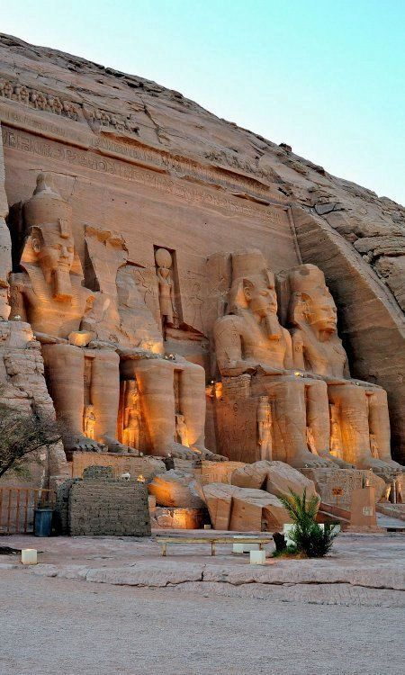
أسوان
من أجمل الوجهات التاريخية والطبيعية على النيل، وتشتهر بمعابدها الفرعونية وجزرها النيلية الخلابة اكتشف المزيد...
بني سويف
تضم آثاراً فرعونية بارزة مثل هرم ميدوم وكهف سنور وتجمع بين التاريخ القديم والطبيعة الهادئة اكتشف المزيد...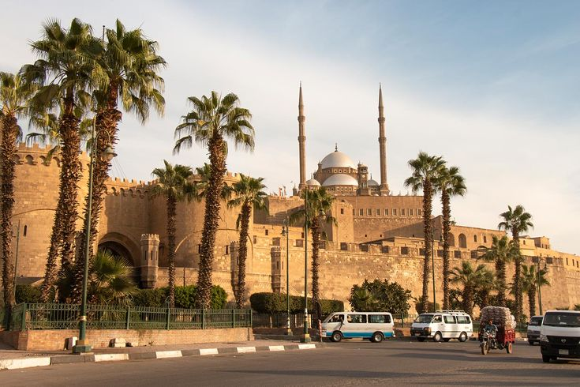
القاهرة
قلب مصر النابض بالتراث المعماري الإسلامي والأسواق القديمة والشوارع العريقة اكتشف المزيد...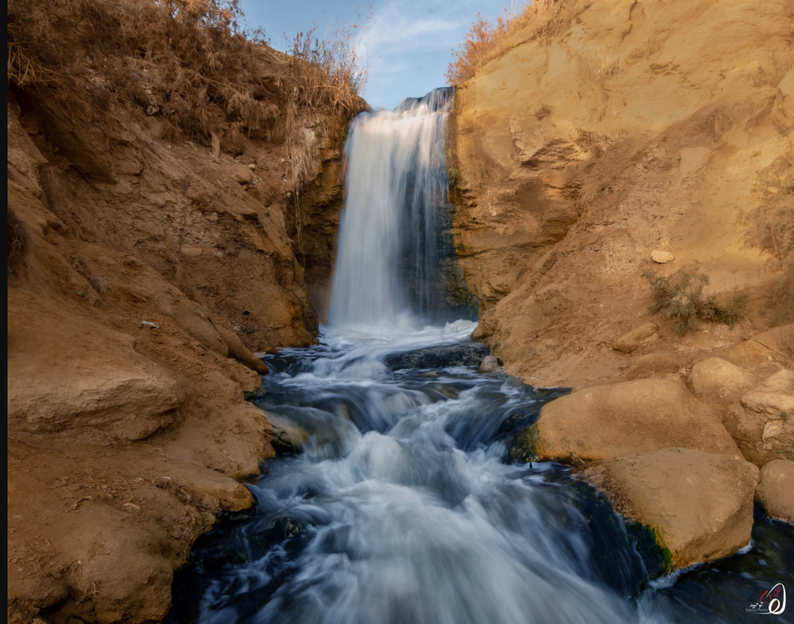
الفيوم
واحة طبيعية تجمع بين الشلالات والبحيرات مثل وادي الريان وقارون مع أجواء هادئة ومميزة اكتشف المزيد...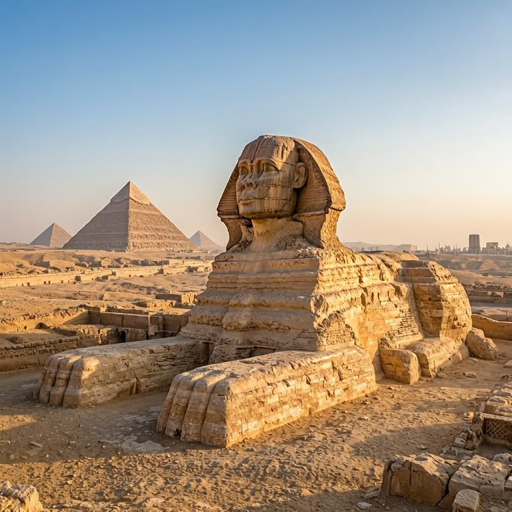
الجيزه
الوصف: موطن الأهرامات العظيمة وأبو الهول وتاريخ الحضارة الفرعونية العريقة التي تجذب الزوار من كل مكان اكتشف المزيد...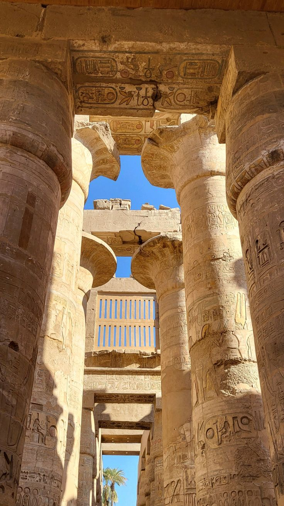
الاقصر
متحف مفتوح للآثار الفرعونية يضم معبد الكرنك ومعبد الأقصر ووادي الملوك والملكات اكتشف المزيد...
مرسي مطروح
تشتهر بشواطئها الفيروزية الصافية ومياهها الهادئة التي تجعلها من أجمل المصايف الساحلية اكتشف المزيد...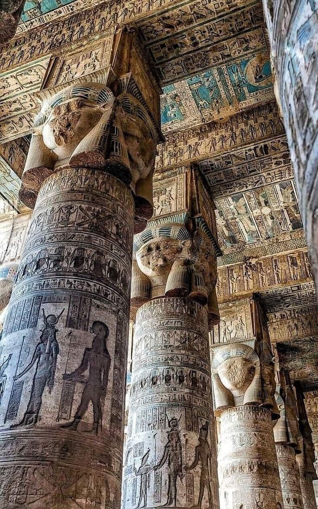
قنا
تضم كنوزاً أثرية مهمة أبرزها معبد دندرة الشهير بسقفه المزخرف ونقوشه الفلكية النادرة اكتشف المزيد...
البحر الأحمر
وجهة عالمية للغوص والشعاب المرجانية والأنشطة البحرية بفضل مياهه الدافئة وشواطئه الخلابة اكتشف المزيد...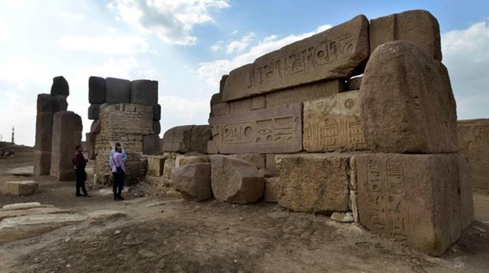
الشرقية
تجمع بين التاريخ الفرعوني مثل منطقة صان الحجر وموروث ثقافي وزراعي عريق في الدلتا اكتشف المزيد...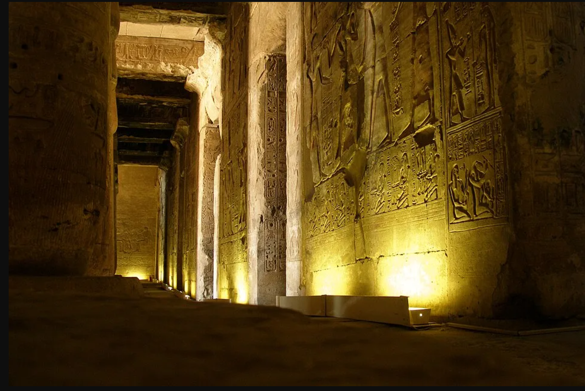
سوهاج
غنية بالتاريخ والآثار المصرية القديمة وعلى رأسها معبد أبيدوس ومدينة أخميم التاريخية اكتشف المزيد...
جنوب سيناء
تضم جبل موسى ودير سانت كاترين ومدينة شرم الشيخ حيث تتلاقى الجبال والروحانيات والبحر الأحمر اكتشف المزيد...
شمال سيناء
أرض التاريخ والبطولات وتجمع بين السواحل البحرية والطبيعة الصحراوية والمواقع التراثية المميزة اكتشف المزيد...
الوادي الجديد
أكبر محافظات مصر مساحة وتتميز بالواحات الخلابة والعيون الكبريتية والكثبان الرملية اكتشف المزيد...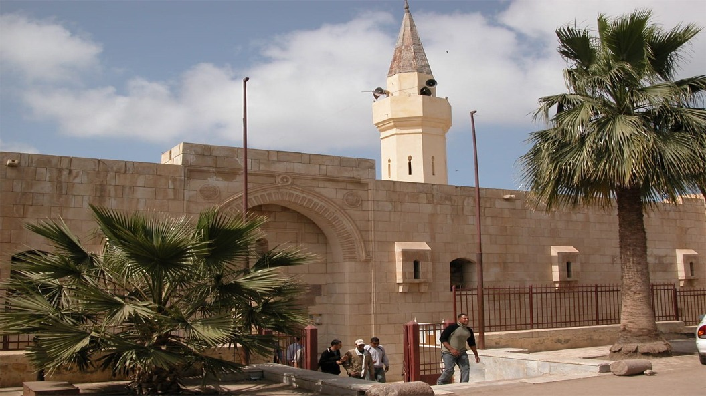
البحيرة
أرض الأصالة والتاريخ، تجمع بين عراقة الماضي وجمال الطبيعة، وتزهو بمعالمها التي تحكي أمجاده اكتشف المزيد...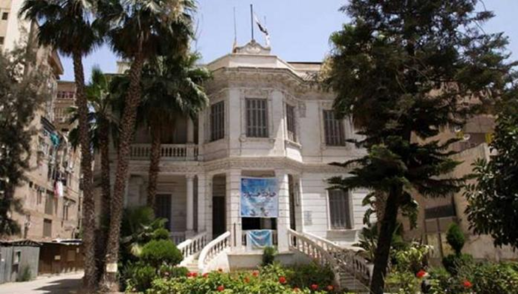
الدقهلية
عروس النيل، ومدينة الجمال والصناعة، تفخر بتاريخها العريق ومعالمها المميزة، وتجمع بين سحر الطبيعة وروعة الحرف اليدوية اكتشف المزيد...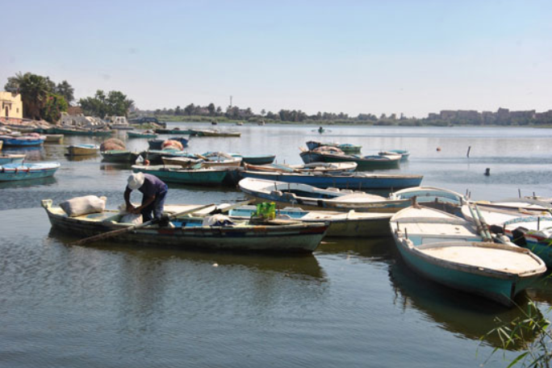